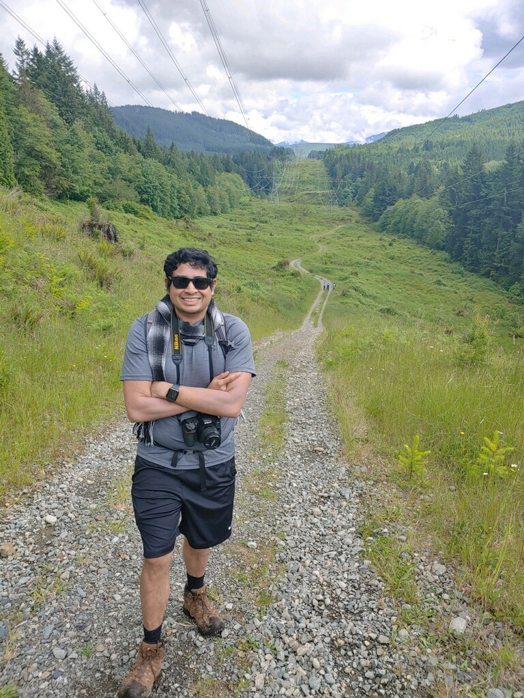

Welcome to my personal website, powered by R Markdown!
Currently working within the D2AS (Device, Digital, and Alexa Support) organization at Amazon as Data Scientist to learn a little more about Natural Language Processing.
I’ve been an Amazonian since 2016. I’ve also worked within AWS Hardware Engineering where I’ve had the good fun in developing a deeper understanding of all things R such as writing complex, but pretty cool dplyr statements, R Shiny Dev Ops, and figuring out how to write data driven reporting via R Markdown. I was bored and decided to move my personal site from wordpress to Github and Google Domains on a long weekend in the middle of COVID-19.
I’ve been a member of the #rstats community since 2012 and have enjoyed every minute of it. I received my Master’s degree from Georgetown University where I was advised by Dr. Todd Leen and Dr. Hans Engler. Prior to Georgetown, I received my Bachelor’s degree from the University of California, Berkeley where I majored in Statistics and explored Public Policy.
I’m always open to connecting and respectfully ask for adherence to the following communication guidelines:
And a cool way to show off a little {dplyr}.
Planning on leveraging the following: